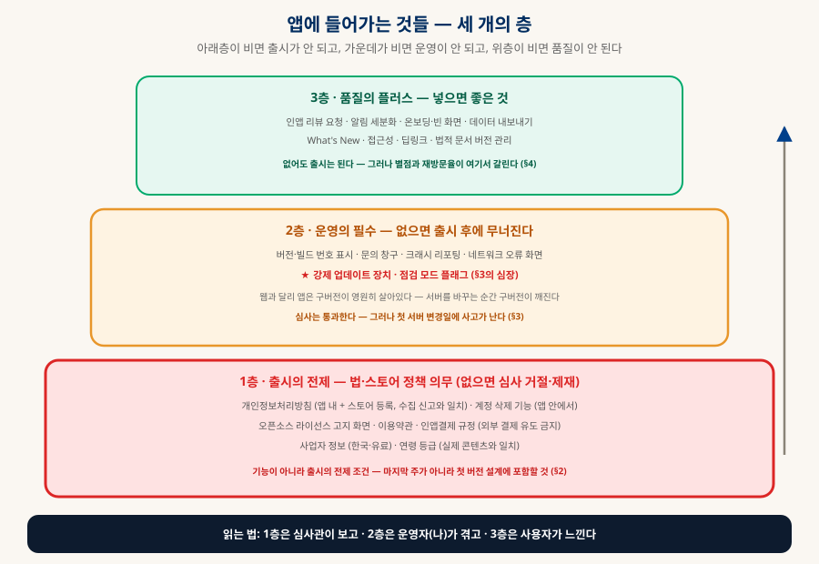
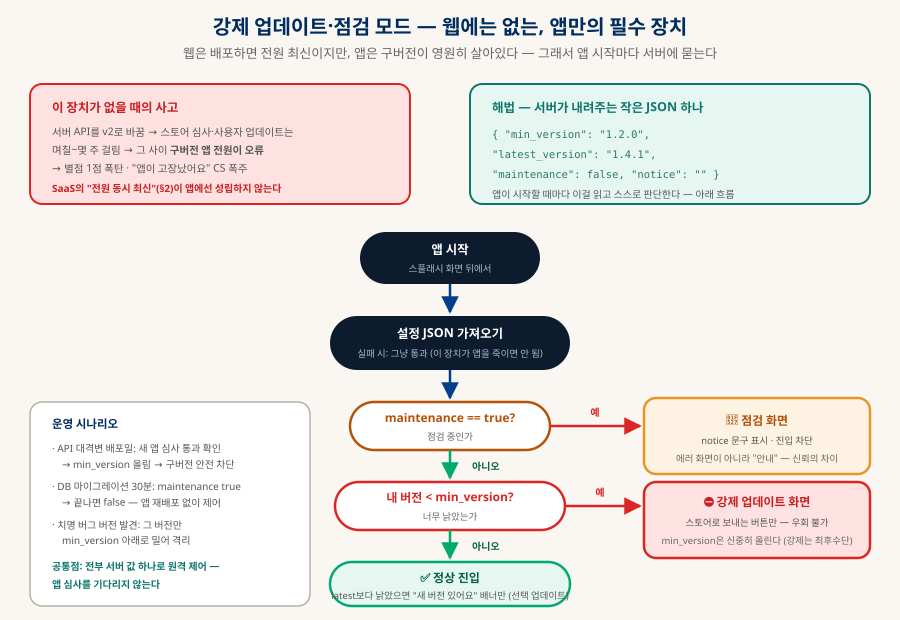
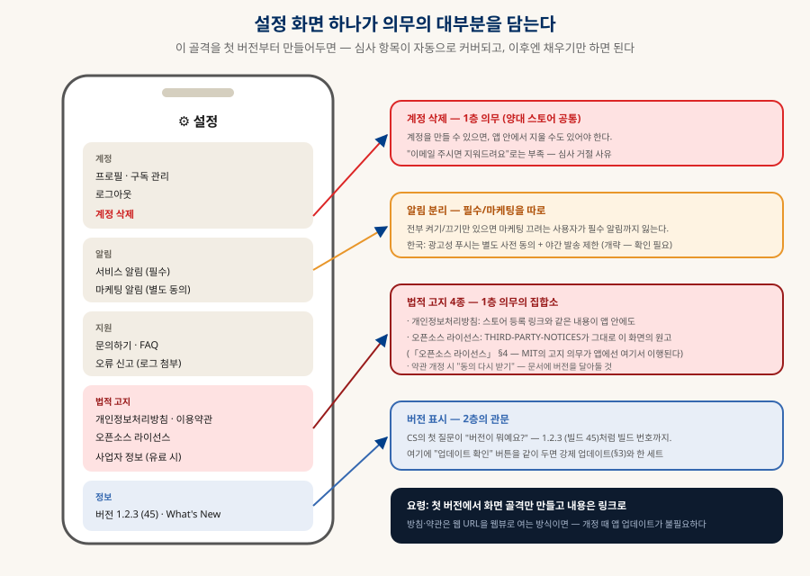

앱 출시의 관문
기능 말고 앱에 반드시 들어가야 하는 것들
앱 스토어에 앱을 올리는 순간, "기능"이 아닌 것들이 운명을 가른다 — 개인정보처리방침·계정 삭제·라이선스 고지 같은 출시의 전제, 강제 업데이트·점검 모드 같은 운영의 필수, 그리고 별점을 가르는 플러스들. 안드로이드·iOS 공통으로, 심사관·운영자·사용자의 세 시선으로 정리한다.
0. 한눈에 보기 — 세 개의 층
1층은 심사관이 보고, 2층은 운영자가 겪고, 3층은 사용자가 느낀다

1. 웹과 앱은 무엇이 다른가 — 이 문서가 존재하는 이유
세 가지 차이가 이 문서의 모든 항목을 낳는다
| 웹 (SaaS) | 모바일 앱 | |
|---|---|---|
| 배포 | push하면 전원 즉시 최신 | 심사 관문(수시간~수일) + 사용자가 업데이트를 눌러야 함 |
| 버전 | 버전이 하나 (서버의 지금) | 구버전이 영원히 살아있다 — 몇 달 전 버전 사용자가 항상 존재 |
| 규칙의 주인 | 내가 정한다 (내 서버) | 스토어가 정한다 — 정책 위반이면 기능이 완벽해도 거절·퇴출 |
이 세 차이에서 모든 것이 따라 나온다: 규칙의 주인이 스토어라서 1층(정책 의무)이 생기고, 구버전이 살아있어서 2층(강제 업데이트·점검 모드)이 생기며, 심사·업데이트의 마찰 때문에 "나중에 넣지"가 몇 주짜리 지연이 된다 — 그래서 이 문서의 결론은 하나다: 이 항목들은 기능이 아니라 첫 버전의 설계 대상이다.
2. 1층 — 법·스토어 정책 의무 (없으면 거절·제재)
심사관의 체크리스트를 미리 통과해 두는 것
| 항목 | 요구 내용 | 흔한 탈락 지점 |
|---|---|---|
| 개인정보처리방침 | 앱 내 접근 링크 + 스토어 등록란 양쪽 모두. 스토어 제출 시 "수집 데이터" 신고(Apple 개인정보 라벨 · Play 데이터 보안 섹션)와 실제 수집이 일치해야 | Crashlytics·Analytics를 쓰면서 "수집 없음"으로 신고 — 불일치가 거절 단골 |
| 계정 삭제 기능 | 계정 생성이 있으면 앱 안에서 계정·데이터 삭제 제공 (양대 스토어 공통 정책) | "이메일 주시면 지워드려요" — 부족 판정. 웹 링크로 보내는 것도 조건 제한 |
| 오픈소스 라이선스 고지 | MIT·Apache 등 의존성의 저작권 고지를 앱 내 화면으로 — THIRD-PARTY-NOTICES.md가 그대로 이 화면의 원고(「오픈소스 라이선스」 §4) | 고지 화면 자체가 없음 — 심사보다 권리자 클레임으로 터진다 |
| 이용약관 | 계정·결제·사용자 콘텐츠가 있으면 사실상 필수 — 환불·책임 한계·계정 정지의 근거 | 결제는 넣고 약관은 없음 — 분쟁 시 방패 부재 |
| 인앱결제 규정 | 디지털 상품·구독은 스토어 결제 사용(수수료 15~30% — 소규모는 15%, 개략). 구독은 취소 방법 안내 요구 | 결제 화면에서 외부 결제 유도 문구·링크 — 즉시 거절 사유 |
| 사업자 정보 (한국·유료) | 상호·통신판매업 신고번호 등 표시 (전자상거래법) | 개인 개발자가 유료 전환하며 신고 누락 |
| 연령 등급 | 스토어 설문으로 등급 산정 — 실제 콘텐츠·UGC 여부와 일치 | UGC(댓글·채팅) 있는데 "없음" 응답 — 신고·제재 경로 |
＋플랫폼 전용 의무 — 여기서부터는 갈린다
위 표의 의무들은 양쪽 공통이지만, "앱에 넣어야 하는 것" 자체가 갈리는 항목들이 있다 — 그리고 이 갈림 항목들이 실제 심사 거절의 단골이다. 크로스플랫폼(React Native·Flutter)으로 만들어도 면제되지 않는다 — 프레임워크가 코드를 통일해줄 뿐, 플랫폼 의무는 각각 이행해야 한다.
| 🍎 iOS 전용 | 내용 |
|---|---|
| ATT 추적 허용 팝업 | 앱 간 추적(광고 ID 활용 — 광고·일부 분석 SDK)을 하면 시스템 표준 팝업으로 사전 동의를 받아야 한다. 팝업 없이 추적하거나, 거부했는데 추적하면 거절·제재 — 광고 SDK를 붙이는 순간 발동하는 의무 |
| Apple 로그인 의무 | 구글·카카오 등 제3자 소셜 로그인을 제공하면 "Apple로 로그인"도 반드시 함께 제공해야 한다 — 소셜 로그인 앱의 단골 거절 사유 |
| 권한 사용 목적 문구 | 카메라·위치·마이크 등에 접근하면 "왜 필요한지" 문구(Info.plist purpose string)가 필수 — 없으면 해당 기능에서 앱이 죽거나 심사 거절. 문구가 성의 없어도("앱 기능에 필요") 거절될 수 있다 |
| 심사용 데모 계정 | 로그인이 있으면 심사관용 테스트 계정을 제출 정보에 첨부 — 사람이 실제로 들어가 본다(§6의 "대사관 인터뷰") |
| 🤖 Android 전용 | 내용 |
|---|---|
| 타겟 API 레벨 의무 | 매년 최신에 가까운 Android 버전을 타겟하도록 강제(대략 1년 이내 — 개략) — 안 올리면 신규 등록·업데이트가 거부된다. "한 번 내고 방치"가 구조적으로 불가능한 이유 |
| 런타임 권한 + 선언서 | 위치·카메라 등은 사용 시점 팝업(런타임 권한). SMS·통화기록·백그라운드 위치 같은 민감 권한은 별도 선언서·심사가 필요하고 대부분 반려된다 — 애초에 안 쓰는 설계가 정답 |
| 알림 권한 (13+) | Android 13부터 알림도 런타임 권한 — 설치만 하면 오던 푸시의 시대는 끝. 온보딩에서 맥락 있는 순간에 요청하는 설계가 필요 |
| AAB + 서명 키 관리 | 신규 앱은 App Bundle(AAB) 형식 + Play App Signing — 업로드 키를 잃으면 복구 절차가 고통스럽다. 키 백업은 3-2-1로(「NAS」의 그 원칙) |
| 시스템 뒤로가기 | iOS엔 없는 시스템 백 제스처/버튼 처리 — 화면마다 "뒤로가면 어디로"를 설계해야 한다. 무시하면 "뒤로 눌렀더니 앱이 꺼져요" 리뷰가 쌓인다 |
3. 2층 — 운영의 필수 (없으면 출시 후에 무너진다)
심사는 통과한다 — 그러나 첫 서버 변경일에 사고가 난다
2층의 심장은 강제 업데이트·점검 모드다. §1의 차이("구버전이 영원히 살아있다")가 만드는 앱만의 문제이고, 해법은 서버가 내려주는 작은 JSON 하나다:

| 항목 | 핵심 포인트 |
|---|---|
| 강제 업데이트 장치 ★ | min_version을 서버에서 내려받아, 낡은 앱은 스토어행 화면으로. 첫 버전부터 넣어야 한다 — 이 장치 자체가 없는 구버전은 영원히 제어 불능이다 |
| 점검 모드 플래그 ★ | maintenance: true면 안내 화면 — DB 마이그레이션 30분을 "고장"이 아니라 "점검"으로 보이게. 앱 재배포 없이 원격 제어 |
| 버전·빌드 번호 표시 | 설정 화면에 1.2.3 (45) — CS의 첫 질문이 "버전이 뭐예요?"다 |
| 문의 창구 | 지원 이메일·문의 폼 — 없으면 불만이 전부 스토어 리뷰(별점 1점 + 답변 제한)로 간다 |
| 크래시 리포팅 | Crashlytics·Sentry류 — 어느 기기·OS에서 튕기는지 모르면 대응 불가. 단 수집 사실을 방침·데이터 신고에 반영(1층과 맞물림) |
| 네트워크 오류 화면 | 오프라인·타임아웃에 흰 화면이면 사용자는 "고장"으로 인식 — 재시도 버튼이 있는 상태 화면 |
4. 3층 — 품질의 플러스 (별점과 재방문율이 갈리는 곳)
없어도 출시는 된다 — 그러나 사용자는 느낀다
| 항목 | 요령 |
|---|---|
| 인앱 리뷰 요청 | 양대 OS 공식 API 사용 — "좋은 순간"에만(작업 성공 직후 등). 아무 때나 띄우면 역효과, 자체 팝업으로 스토어 강제 이동은 정책 위반 소지 |
| 알림 세분화 | 필수/마케팅 분리 — 전부 끄기만 있으면 필수 알림까지 잃는다. 한국은 광고성 푸시 별도 사전 동의 + 야간 발송 제한(개략 — 시행 시점에 확인) |
| 온보딩·빈 화면 | 가입 후 3분의 "아하"(「SaaS 해부」 §4-C) — 빈 목록엔 샘플 데이터·시작 안내 |
| 데이터 내보내기 | 신뢰 자산이자 종료 보험(「SaaS 해부」 §6) — 앱에서도 동일 |
| What's New | 업데이트 후 첫 실행에 한 장 — 스토어 릴리스 노트는 아무도 안 읽는다 |
| 접근성 | 시스템 글자 크기 존중·스크린리더 라벨 — 품질 평가와 심사 양쪽에 유리 |
| 딥링크 | 웹 링크 → 앱 화면 직행 — 공유·마케팅·알림 터치의 기반 인프라 |
| 법적 문서 버전 관리 | 약관 개정 → "다시 동의" 흐름 — 문서에 버전을 달아두면 나중이 편하다 |
5. 설정 화면 골격 — 의무의 대부분이 한 곳에 모인다
첫 버전에서 이 골격만 만들어두면, 이후엔 채우기만 하면 된다

6. 두 스토어 비교 — 같은 원리, 다른 성격
의무의 내용은 거의 같고, 통과의 경험이 다르다
| Google Play | Apple App Store | |
|---|---|---|
| 개발자 등록 | 1회 $25 (개략) | 연 $99 (개략) — 매년 갱신 |
| 심사 성격 | 자동화 비중 높음 — 통과는 빠르나 사후 적발·일괄 제재가 잦다 | 사람 심사 비중 높음 — 첫 통과가 깐깐하고 거절 사유를 문답으로 다툰다 |
| 개인정보 신고 | 데이터 보안 섹션 | 개인정보 라벨 (영양성분표 스타일) |
| 테스트 배포 | 내부·비공개·공개 트랙 (콘솔에서 단계적) | TestFlight (외부 테스터도 심사 있음) |
| 단계적 출시 | 비율 지정 점진 배포 (1%→10%→100%) | 7일 자동 점진 배포 옵션 |
| 신규 개인 계정 특이사항 | 개인 계정은 일정 수·기간의 비공개 테스트를 요구하는 정책 도입됨 (개략 — 제출 전 최신 정책 확인) | — |
| 수수료 | 기본 30% · 소규모(연 매출 기준) 15% 프로그램 양쪽 존재 (개략) — 「애플 앱 개발의 지도」 §4의 관문 비용 | |
7. 출시 전 체크리스트
제출 버튼을 누르기 전 — 층별로 한 번에
| 층 | 확인 |
|---|---|
| 1층 · 출시의 전제 | □ 방침 링크가 앱 안+스토어 양쪽에 □ 데이터 수집 신고 = SDK 실제 수집 (분석·크래시 포함) □ 계정 삭제가 앱 안에서 됨 □ 라이선스 고지 화면 (자동 생성) □ 약관+환불 정책 □ 외부 결제 유도 문구 없음 □ (유료·한국) 사업자 정보 □ 등급 설문과 콘텐츠 일치 |
| 2층 · 운영의 필수 | □ min_version·maintenance 원격 플래그가 v1.0.0에 있음 □ 플래그 읽기 실패 시 통과 확인 □ 설정에 버전 (빌드) 표시 □ 문의 창구 □ 크래시 리포팅 연결(+신고 반영) □ 오프라인 상태 화면 |
| 3층 · 품질 | □ 온보딩·빈 화면 □ 리뷰 요청은 공식 API·좋은 순간에만 □ 알림 필수/마케팅 분리(+한국 동의 요건) □ What's New □ 시스템 글자 크기에서 깨지지 않음 |
| 플랫폼 전용 | □ (iOS) 추적 SDK 있으면 ATT 팝업 □ (iOS) 소셜 로그인 있으면 Apple 로그인 병행 □ (iOS) 권한 목적 문구 전부 작성 □ (Android) 타겟 API 최신 확인 □ (Android) 민감 권한 없음(또는 선언서) □ (Android) 뒤로가기 전 화면 점검 □ (Android) 업로드 키 백업 |
| 제출 실무 | □ 스크린샷·설명이 실제 기능과 일치(과장 = 거절 사유) □ 심사용 테스트 계정 제공(로그인 앱) □ 단계적 출시로 시작 □ 출시 후 첫 48시간 크래시·리뷰 모니터링 |
8. 함께 읽기
이 문서에서 갈라지는 길들
| 주제 | 문서 |
|---|---|
| 무엇으로 만드나 — 툴체인·의무의 사다리·서명 | 「애플 앱 개발의 지도」 (§4 배포의 관문이 이 문서의 형제 절) |
| 라이선스 고지의 원고 — THIRD-PARTY-NOTICES | 「오픈소스 라이선스와 바이브코딩」 §4·§5 + rules/LICENSE-RULES.md |
| 계정·데이터·구독의 책임 | 「SaaS 해부」 — 구독 상태 기계·우아한 종료 |
| 모바일 백엔드 선택 — Firebase vs Supabase | 「데이터베이스 완전 정리」 §9-C |
| 만드는 프로세스 — 검증·게이트·리뷰 | 「AI 시대의 개발 프로세스」 |